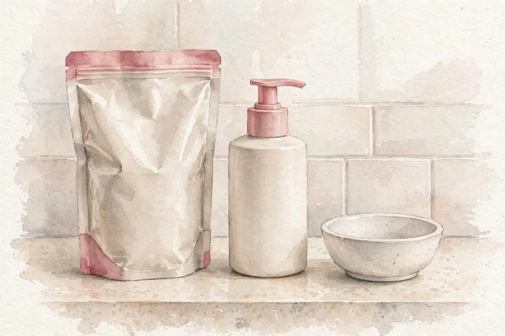

トップ ＞ スキンケア ＞ スキンケアの詰め替え用を買うときの確認点
スキンケアの詰め替え用を買うときの確認点

詰め替え用は、価格の面でも、容器を繰り返し使う面でも、選ぶ理由の多い形態です。ただし、本体に詰め替える作業には、いくつか確認したい点があります。この記事では、買うときと詰め替えるときの確認点を整理します。
買う前に：本体との対応を確認
まず、その詰め替え用が自分の持っている本体容器に対応しているかを確認します。同じシリーズでも、容器の世代によって口の形が違うことがあります。パッケージには対応する本体の案内が書かれているので、買う前に照らし合わせてください。内容量も、本体の容量と合っているかを見るポイントです。
また、詰め替え用には使用期限や保管の注意が書かれている場合があります。まとめ買いは、使い切るペースとの相談です。開封した日付を書く習慣と組み合わせると、管理がしやすくなります。
詰め替え前に：容器を洗って、よく乾かす
詰め替えの作業で一番大切なのは、本体容器の扱いです。残りが少なくなった容器は、中を洗い、よく乾かしてから新しい中身を入れます。水気が残ったまま詰め替えると、中身の状態に影響する心配があります。ポンプ部分も、分解できる範囲で洗い、乾かしてから戻します。
作業は、洗面所が清潔なタイミングで、落とした直後などの慌ただしい時間は避けて行うのがおすすめです。違う商品を同じ容器に詰め替えることは、表示の管理の面でも避けたほうが無難です。容器と中身は、常に対で考えるのが基本です。
詰め替えたら、日付を書く
詰め替えが終わったら、容器に詰め替え日を書いておきます。開封日の記録と同じ考え方で、「いつ詰め替えたか」が分かると、使い切りの見通しが立てやすくなります。詰め替え用の袋自体にも、開封日を書いておくと、残りを保管する場合の管理ができます。
詰め替えは、手間のある方法です。その手間を手順化しておくと、毎回同じ品質で作業できます。買う、洗う、乾かす、詰める、書く。この5つの流れを、自分の型にしておきましょう。
本体容器そのものの寿命も見る
詰め替えを繰り返すうちに、本体容器にも傷みが出てきます。ポンプの出が悪くなった、キャップの閉まりが緩くなった、容器にひびが入った。こうした変化は、本体ごと買い替える合図です。詰め替え用だけを買い続けるのではなく、本体の状態も定期的に確認する視点を持ってください。
本体を新しくしたら、開封日と一緒に「本体の使用開始日」も書いておくと、次の買い替えの目安になります。詰め替えの管理は、中身と容器の両方を見ることです。その両輪がそろって、詰め替えという方法の良さが活きてきます。
詰め替えの作業は、頻度が決まると上達します。最初は手間に感じても、流れが体に入れば数分で終わる作業です。作業の手順を、容器の近くにメモとして貼っておく家庭もあります。洗う、乾かす、詰める、書く。この4つの言葉があれば、家族の誰が行っても同じ品質になります。
環境の観点では、詰め替えは容器の廃棄を減らす方法でもあります。続ける理由は、価格だけではありません。自分の生活に合う理由を見つけておくことが、手間のある方法を長続きさせる土台になります。
詰め替え用を選ぶときは、保管中の置き場所も考えておいてください。未開封の詰め替え用も、直射日光や高温を避けるのが基本です。洗面所に置ききれない場合は、ほかの保管場所を決め、開封日ならぬ購入時期を書いておくと管理できます。
詰め替えの回数が増えると、1回あたりの作業はどんどん手早くなります。最初の数回は、手順を確認しながらで構いません。作業の型ができれば、家族と分担することも可能になります。
詰め替えは、少しの手間と引き換えに、価格と環境の両方に配慮できる方法です。その手間を「面倒」で終わらせず、手順として設計することが、続けるコツです。
セラフィナ「詰め替えは、容器を洗って乾かすところからだね。日付まで書けたら完璧だよ」